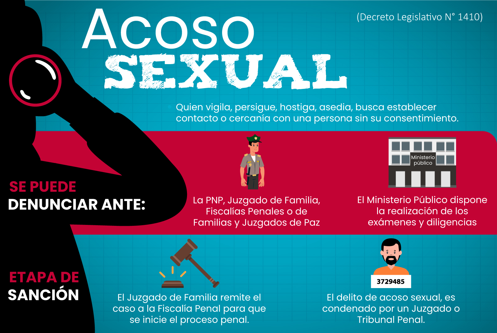
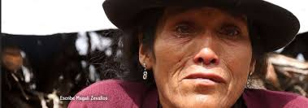
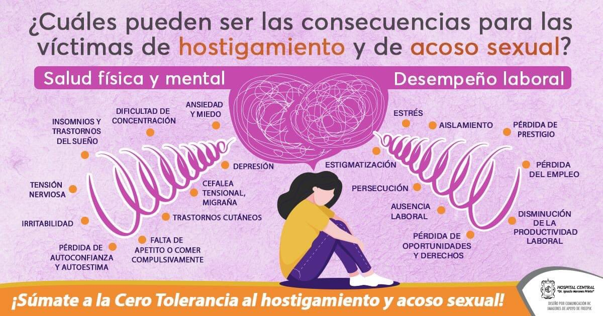

Investigacion del acoso sexual en Ayacucho
Nosotros
Nuestro equipo de trabajo busca resaltar el poco interes que existe en Ayacucho y en el Peru por el acoso sexual, realizando una investigacion para calcular el numero de personas que sufren o sufrieron algun modo de acoso, los resultados obtenidos seran analizados y publicados en la pagina; el objetivo de la investigacion es crear alterativas de solucion para resolver el preoblema del acoso sexual.

Proyecto
El proyecto fue realizado basandonos en un modelo creado por nuestro profesor de quimica, el modelo esta compuesta por:Introduccion, planteamiento de problema, marco teorico, etc. Para nuestro trabajo agregamos los resultados de la encuesta del acoso, junto con los resultados de esta; agregamos los graficos con los porcentajes de las respuestas y llegamos a nuestras propias conclusiones.
Introduccion
El acoso sexual es un problema social y cultural significativo que afecta a diversas comunidades en todo el mundo, incluyendo Ayacucho, una ciudad histórica y culturalmente rica en el Perú. Este trabajo busca explorar y analizar la prevalencia, las causas subyacentes, las consecuencias y las respuestas institucionales y comunitarias al acoso sexual en Ayacucho.
Contexto Histórico y Cultural de Ayacucho
Ayacucho, una región situada en los Andes centrales del Perú, se caracteriza por su profunda historia cultural y su diversidad étnica. Esta zona ha sido históricamente reconocida por su legado andino, donde las tradiciones indígenas como la música, la danza y las festividades desempeñan un papel central en la vida cotidiana. Además, Ayacucho es conocida por su papel crucial en la independencia de Perú, siendo el escenario de la decisiva Batalla de Ayacucho en 1824, que puso fin al dominio español en Sudamérica.Sin embargo, como en muchos lugares, el acoso sexual es un problema social que afecta a la región. Aunque la cultura andina valora la comunidad y la cohesión social, también enfrenta desafíos en términos de equidad de género y derechos de las mujeres. El acoso sexual, desafortunadamente, es una manifestación de desigualdad de género que persiste en varios ámbitos sociales, incluyendo el trabajo, la educación y la vida pública.En conclusión, Ayacucho tiene una rica historia cultural y un contexto único en los Andes peruanos, pero como en muchas partes del mundo, enfrenta el desafío del acoso sexual dentro de un marco cultural diverso y en evolución.

Prevalencia del Acoso Sexual en Ayacucho
La prevalencia del acoso sexual en Ayacucho, al igual que en muchas otras partes del mundo, es un problema significativo que afecta a diversas áreas de la vida social, laboral y educativa. Sin embargo, es importante destacar que las estadísticas específicas pueden variar y no siempre están fácilmente disponibles debido a la subnotificación y otros factores.En general, las zonas rurales como Ayacucho pueden enfrentar desafíos adicionales en la recopilación de datos precisos sobre el acoso sexual debido a barreras como el estigma, la falta de acceso a servicios de apoyo y la percepción de que ciertos comportamientos son normales o aceptables.El acoso sexual puede manifestarse de diversas maneras, desde comentarios inapropiados y gestos hasta agresiones físicas, y puede ocurrir tanto en entornos públicos como privados. Las víctimas suelen enfrentar dificultades para denunciar estos incidentes debido al temor a represalias, la falta de confianza en el sistema de justicia y la percepción de que no se tomarán medidas adecuadas.En resumen, aunque no existen datos específicos sobre la prevalencia del acoso sexual en Ayacucho, es claro que es un problema que afecta a la región, como a muchas otras partes del mundo, y requiere esfuerzos continuos para abordar tanto la prevención como la respuesta adecuada a estos comportamientos.

Causas y Factores Subyacentes
El acoso sexual es un problema complejo que puede tener diversas causas y factores subyacentes en diferentes contextos, incluyendo Ayacucho o cualquier otra región. A continuación, menciono algunos factores y causas que podrían contribuir al acoso sexual:
Cultura y Normas Sociales: Las normas culturales y sociales pueden perpetuar actitudes que permiten el acoso sexual. En algunas culturas, el machismo y la desigualdad de género pueden normalizar comportamientos de dominación y control sobre las mujeres.
Desigualdad de Género: La falta de equidad entre hombres y mujeres en términos de poder, acceso a recursos y oportunidades puede generar un ambiente propenso al acoso sexual. Cuando hay desigualdad, las personas pueden sentir que tienen el derecho de acosar a otros como una forma de ejercer poder sobre ellos.
Educación y Conciencia: La falta de educación sobre el respeto mutuo, los derechos humanos y la igualdad de género puede contribuir al acoso sexual. La falta de conciencia sobre qué constituye el acoso sexual y cómo prevenirlo puede llevar a que las personas toleren o perpetúen este tipo de comportamiento.
Impunidad y Falta de Denuncia: En muchos casos, el acoso sexual no se denuncia debido al miedo a represalias, la falta de confianza en el sistema de justicia, o la percepción de que denunciar no conducirá a ninguna consecuencia positiva. Esto puede perpetuar un ciclo donde los acosadores no enfrentan consecuencias por sus acciones.
Ambientes Laborales o Educativos Hostiles: Ambientes laborales o educativos que toleran el acoso sexual o tienen estructuras jerárquicas que facilitan el abuso de poder pueden fomentar el acoso sexual. La falta de políticas claras contra el acoso sexual y de mecanismos efectivos para reportarlo y abordarlo pueden contribuir al problema.
Condiciones Socioeconómicas: En entornos de pobreza o desigualdad económica, las personas pueden sentirse más vulnerables a situaciones de acoso sexual, ya sea por necesidad económica o por falta de opciones viables para evitar o denunciar el acoso.
Percepciones Culturales sobre la Sexualidad: Algunas culturas pueden tener percepciones sobre la sexualidad que contribuyen al acoso sexual, como la hipersexualización de las mujeres o la idea de que ciertos comportamientos son justificables según el contexto.
Es importante abordar el acoso sexual desde múltiples frentes, incluyendo la educación, la sensibilización, la implementación de políticas efectivas en las instituciones, y el fortalecimiento de la protección legal y el acceso a la justicia para las víctimas.

Consecuencias del Acoso Sexual
Las consecuencias del acoso sexual en Ayacucho, al igual que en cualquier otra parte del mundo, pueden ser profundas y abarcar diferentes aspectos personales, sociales y comunitarios. Algunas de las consecuencias más comunes incluyen:
Impacto Psicológico: Las víctimas de acoso sexual pueden experimentar una amplia gama de problemas psicológicos, como ansiedad, depresión, trastorno de estrés postraumático (TEPT), sentimientos de culpa, vergüenza y baja autoestima. Estos efectos pueden ser duraderos y afectar seriamente la calidad de vida de las personas afectadas.
Impacto Social y Relacional: El acoso sexual puede afectar las relaciones personales y sociales de las víctimas. Pueden experimentar dificultades para confiar en otras personas, especialmente en entornos donde se sienten vulnerables. Esto puede llevar al aislamiento social y a problemas de integración en la comunidad.
Impacto Laboral y Educativo: En entornos laborales o educativos, el acoso sexual puede tener consecuencias graves. Las víctimas pueden experimentar dificultades para concentrarse en sus estudios o trabajo, disminución del rendimiento académico o laboral, y dificultades para avanzar en sus carreras debido al estrés emocional y la distracción causados por el acoso.
Daño a la Salud Física: Aunque no siempre es visible de inmediato, el acoso sexual puede tener efectos negativos en la salud física de las víctimas. El estrés crónico relacionado con el acoso puede contribuir a problemas como dolores de cabeza, problemas gastrointestinales, trastornos del sueño y otros problemas de salud física.
Cambio en la Autopercepción y la Identidad: Las personas que han experimentado acoso sexual pueden experimentar cambios en cómo se perciben a sí mismas y en su sentido de identidad. Pueden desarrollar una visión más negativa de sí mismas, sentir culpa injustificada o cuestionar su propio valor y dignidad.
Impacto en la Comunidad: El acoso sexual no solo afecta a las víctimas directas, sino también a la comunidad en su conjunto. Puede generar desconfianza hacia las instituciones que no responden adecuadamente al problema, erosionar la cohesión social y perpetuar ciclos de violencia y desigualdad de género.
Es fundamental abordar el acoso sexual desde una perspectiva integral, que incluya la prevención, la sensibilización, el apoyo a las víctimas y la implementación de políticas efectivas en todos los niveles de la sociedad para mitigar estas graves consecuencias.
Resultados
Graficos
Tabulacion